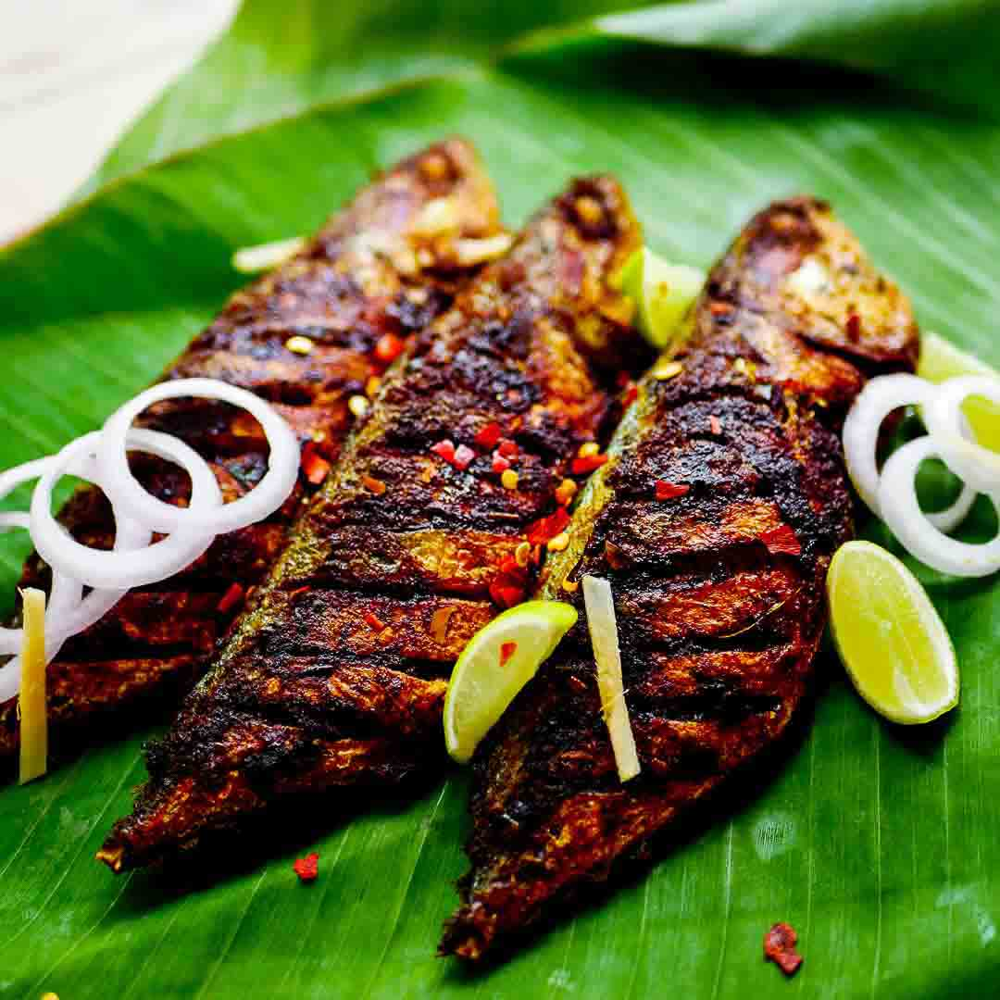

Fish Fry

Description
This the fav food of keralites,
its easy to make and much tastier
than fish curry.
Ingredients
Steps
- get the fish cuted and cleaned
- make paste using pepper powder and salt with some oil
- now paste the mixer into fish body parts
- take pan and put some oil and boil it
- Wait for 15 min get the fish mature to be eaten
- yeaahoo fish fry ready..